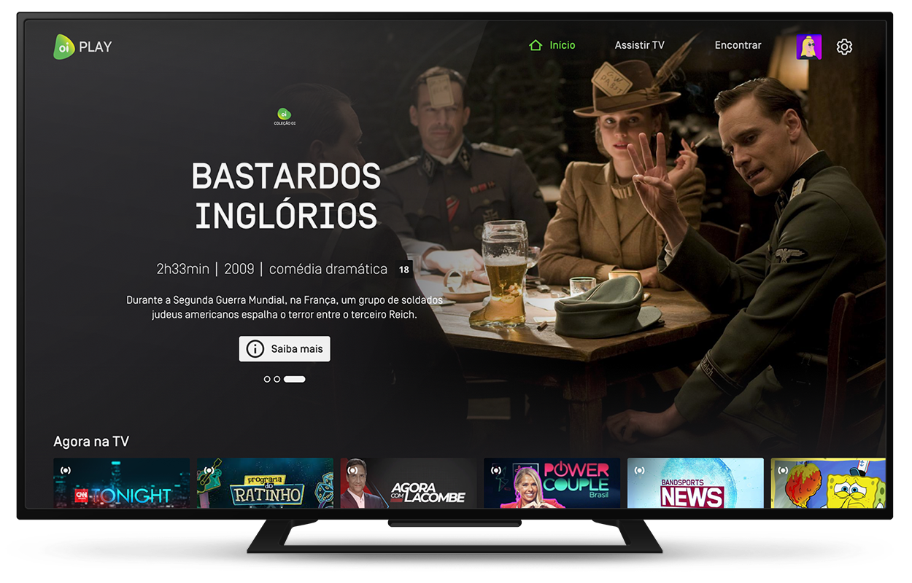

<section id="oi-play" class="section_oi_play">
    <div class="max_width_container_oiplay">
        <div class="oi_play_row">
            <div class="oi_play_coluna_esquerda">
                <figure class="oi_play_titulo_imagem">
                    
                </figure>
                <div class="texto_oi_play">
                    <h2 class="texto_oi_play_heading">Oi Fibra já vem com acesso ao Oi Play Básico, mas você também pode assinar o Oi Play TV</h2>
                    <p class="texto_oi_play_paragrafo">Com o Oi Play, você tem muitos canais ao vivo e conteúdo.
                    </p>
                    <div class="texto_oi_play_basico_tv">
                        <h4>Oi Play <b>Básico</b></h4>
                        <p class="paragrafo_com_titulo_oiplay"><strong>Incluído</strong> na Oi Fibra</p>
                        <p class="texto_oi_play_paragrafo">Assista a 6 canais ao vivo, como Band, Record News e TV Cultura.</p>
                        <div class="texto_oi_play_basico_tv">
                            <h4>Oi Play <b>TV</b></h4>
                            <p class="paragrafo_com_titulo_oiplay">Por mais <strong>R$ 69,90</strong> /mês</p>
                            <p class="texto_oi_play_paragrafo">São 39 canais ao vivo. Tem GloboNews, Viva, Sportv e muitos mais, além de filmes e séries.</p>
                        </div>
                    </div>
                    <p class="texto_oi_play_paragrafo">Assine Oi Fibra agora e adicione o Oi Play TV por R$ 69,90 por mês. Pra quem não tem Oi Fibra, a assinatura mensal é de R$ 99,90.</p>
                </div>
                <div class="botoes_oi_play">
                    <a data-gtmButton="btn_section-oi-play_consultar-disponibilidade" id="oi-play-consultar-disponibilidade" class="botao_conheca_oi_play" href="https://www.oi.com.br/internet/oi-play">Conheça o Oi Play </a>
                    <a data-gtmButton="btn_section-oi-play_saibar-mais-sobre-o-serviço-de-oi-play-_saiba-mais" id="oi-play-saiba-mais" class="botao_quero_oi_fibra" href="https://oinovafibra.oi.com.br/fibra/s/?skipshopWindow=true">Quero Oi Fibra</a>
                </div>
            </div>

            <figure class="imagem_oi_play">
                
            </figure>
        </div>
    </div>
</section>